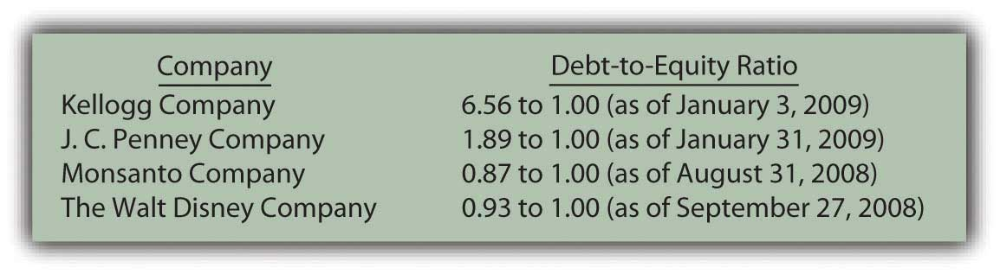

At the end of this section, students should be able to meet the following objectives:
Question: According to the information at the beginning of this chapter, Alcoa reported a $2.73 billion liability at the end of 2008 for accrued postretirement benefits. What constitutes a postretirement benefit?
Answer: In a note to the Alcoa financial statements, the company explains part of this liability amount as follows:
“Alcoa maintains health care and life insurance benefit plans covering eligible U.S. retired employees and certain retirees from foreign locations. Generally, the medical plans pay a percentage of medical expenses, reduced by deductibles and other coverages. These plans are generally unfunded, except for certain benefits funded through a trust. Life benefits are generally provided by insurance contracts. Alcoa retains the right, subject to existing agreements, to change or eliminate these benefits.”
Postretirement benefits cover a broad array of promises that companies make to their employees to boost morale and keep them from seeking other jobs. Alcoa is providing two of the most common: health care insurance and life insurance. Based on stipulations that may be required for eligibility, Alcoa helps employees by paying a portion of their insurance cost even after they have retired. This benefit is apparently earned by working for the company. After a person retires, Alcoa continues to provide these payments as a reward for years of employee service.
Question: Assume that one of the employees for the Michigan Company is currently thirty-four years old and is entitled to retirement benefits starting at the age of sixty-five. Michigan has promised to continue paying health care and life insurance premiums for all retirees as long as they live.Health care and life insurance benefits paid by an employer while an employee is still working do not pose an accounting issue. The amounts are known and can be expensed as incurred. These expenses are matched with the revenues being earned at the current time.For this employee, no postretirement benefits will be paid for thirty-one years (65 less 34) but then an unknown payment amount will continue for an unknown period of time. In Chapter 2 "What Should Decision-makers Know So That Good Decisions Can Be Made about an Organization?", the challenge presented to accountants as a result of future uncertainty was discussed. Probably no better example can be found than postretirement benefits. For example, if this employee lives to be ninety-four, these insurance payments will continue until sixty years into the future.
The employee is helping the company generate revenues currently so that, once again, the related expense should be recognized now according to the matching principle. Although this obligation might extend for decades, both the expense and related liability are recorded when the person is actually working for the company and earning these benefits.
How is the amount of this obligation possibly determined? An employee might retire at sixty-five and then die at sixty-six or live to be ninety-nine. Plus, estimating the cost of insurance (especially medical insurance) over several decades into the future seems to be a virtually impossible challenge. The skyrocketing cost of health care is difficult to anticipate months in advance, let alone decades. The dollar amount of the company’s obligation for these future costs appears to be a nebulous figure at best. In this textbook, previous liabilities have been contractual or at least subject to a reasonable estimation prior to recognition. How is the liability calculated that will be reported by a company for the postretirement benefits promised to its employees?
Answer: As shown by the Alcoa example, postretirement benefits are estimated and reported according to U.S. GAAP while employees work. Because of the length of time involved and the large number of variables (some of which, such as future health care costs, are quite volatile), a precise determination of this liability is impossible. In fact, it may be the most uncertain number found on any set of financial statements. FASB apparently believes that reporting a dollar amount for postretirement benefits, despite its inexactness, is more helpful than omitting the expense and liability entirely. Decision makers need to understand that these reported balances are no more than approximations.
The actual computation and reporting of postretirement benefits is more complicated than can be covered adequately in an introductory financial accounting textbook. An overview of the basic steps, though, is useful in helping decision makers understand the information that is provided.
To determine the liability to be reported for postretirement benefits that are earned now but only paid after retirement, the Michigan Company takes two primary steps. First, an actuaryAn individual who mathematically computes the likelihood of future events. calculates an estimation of the cash amounts that will eventually have to be paid as a result of the terms promised to employees. “An actuary is a business professional who analyzes the financial consequences of risk. Actuaries use mathematics, statistics, and financial theory to study uncertain future events, especially those of concern to insurance and pension programs.”http://www.math.purdue.edu/academic/actuary/what.php?p=what. In simpler terms, an actuary is an expert who mathematically computes the likelihood of future events.
For postretirement benefitsPromises such as pension payments, health care insurance coverage, and life insurance benefits made by employers to eligible employees to be received after they reach a specified retirement age., the actuary has to make a number of estimations such as the average length of the employees’ lives and the approximate future costs of health care and life insurance (and any other benefits provided to retirees) based on all available data. For example, an actuary’s calculations might indicate that these costs will average $10,000 per year for the twenty years that an employee is expected to live following retirement.
The future payments are estimated by an actuary but they must often be projected decades into the future. Thus, as the second step in this process, the present value of these amounts is calculated to derive the figure to be reported currently on the balance sheet. Once again, as in previous chapters, interest for this period of time is determined mathematically and removed to leave just the principal of the obligation as of the balance sheet date. That is the amount reported within noncurrent liabilities.
| Determining Accrued Postretirement Benefits |
|---|
| Step One: Estimate Future Payments |
| Step Two: Calculate Present Value of Estimated Future Payments |
Link to multiple-choice question for practice purposes: http://www.quia.com/quiz/2093033.html
Question: Alcoa is recognizing an accrued postretirement benefit liability of $2.73 billion. This number is an estimation of the total amount that the company will have to pay starting when each employee retires, a figure that is then subjected to a present value computation. Except for the inherent level of uncertainty, the accounting process seems reasonable. At one time, companies were not required to recognize this obligation. The liability was ignored and costs were simply expensed as paid. Only after advanced computer technology and sophisticated mathematical formulas became available was the reporting of this liability mandated by FASB. What is the impact of reporting postretirement benefits if the number is only an approximation?
Answer: Organizations typically prefer not to report data that appear to weaken the portrait of their economic health and vitality. However, better decisions are made by all parties when more information is readily available. Transparency is a primary goal of financial accounting. Arguments can be made that some part of the problems that automobile and some other businesses currently face are the result of promises that were made over the past few decades where the eventual costs were not properly understood.
As the result of the evolution of U.S. GAAP, decision makers (both inside and outside the company) can now better see the costs associated with postretirement benefits. Not surprisingly, once disclosed, some companies opted to cut back on the amounts promised to retirees. The note quoted above for Alcoa goes on further to say, “All U.S. salaried and certain hourly employees hired after January 1, 2002, will not have postretirement health care benefits. All U.S. salaried and certain hourly employees that retire on or after April 1, 2008, will not have postretirement life insurance benefits” (emphasis added).
For the employees directly impacted, these decisions may have been quite alarming. However, by forcing the company to recognize this liability, U.S. GAAP has helped draw attention to the costs of making such promises.
Link to multiple-choice question for practice purposes: http://www.quia.com/quiz/2092990.html
Question: In previous chapters, various vital signs have been examined—numbers, ratios, and the like that help decision makers evaluate an entity’s financial condition and future prospects. In connection with liabilities, do any specific vital signs exist that are frequently relied on to help assess the economic health of a business or other organization?
Answer: One vital sign that is often studied by decision makers is the debt-to-equity ratioA measure of a company’s use of debt for financing purposes; it is computed by dividing total liabilities by total stockholders’ equity. This figure is simply the total liabilities reported by a company divided by total stockholders’ equity. The resulting number indicates whether the company gets most of its assets from borrowing and other debt or from its operations and owners. A high debt-to-equity ratio indicates that a company is highly leveraged. As discussed in Chapter 14 "In a Set of Financial Statements, What Information Is Conveyed about Noncurrent Liabilities Such as Bonds?", that raises the level of risk but also increases the possible profits earned by stockholders. Relying on debt financing makes a company more vulnerable to bankruptcy and other financial problems but also provides owners with the chance for higher financial rewards.
Recent debt-to-equity ratios shown below for several prominent companies show a wide range of results. No single financing strategy is evident here. The debt-to-equity ratio is not just indicative of a company’s selected policy. In some industries, debt levels tend to be higher than in others. Also, individual responses to the recent economic recession might have impacted some companies more than others.
Figure 15.12 Recent Debt-to-Equity Ratios for Several Prominent Companies
Another method to evaluate the potential problem posed by debts is to compute the times interest earned (TIE)A measure of a company’s ability to meet its obligations as they come due; it is computed by taking EBIT (earnings before interest expense and income taxes) and dividing that number by interest expense for the period. ratio. Normally, debt only becomes a risk if interest cannot be paid when due. This calculation helps measure how easily a company has been able to meet its interest obligations through current operations.
Times interest earned begins with the company’s net income before both interest expense and income taxes are removed (a number commonly referred to as EBIT). Interest expense for the period is then divided into this income figure. For example, if EBIT is $500,000 and interest expense is $100,000, the reporting company earned enough during the year to cover the required interest obligations five times.
Figure 15.13 Recent Times Interest Earned for Several Prominent Companies
Link to multiple-choice question for practice purposes: http://www.quia.com/quiz/2092991.html
Businesses and other organizations often promise benefits (such as medical insurance and life insurance coverage) to eligible employees for the years after they reach retirement age. Determining the related liability poses a significant challenge for accountants because the eventual payment amounts are so uncertain. An actuary uses historical data, computer programs, and statistical models to estimate these amounts. The present value of these projected cash payments is then calculated and recognized as a noncurrent liability. The size of this debt can be quite large but the numbers are no more than approximations. Decision makers often analyze the level of a company’s debt by computing the debt-to-equity ratio and the times interest earned ratio. Both of these calculations help decision makers evaluate the risk and possible advantage of the current degree of debt financing.
Following is a continuation of our interview with Kevin G. Burns.
Question: Lease arrangements are quite common in today’s business environment. For a capital lease, the present value of the future payments is reported by the lessee as a liability. In contrast, for an operating lease, only the amount currently due is included on the balance sheet as a liability. The reporting of such off-balance sheet financing has been criticized because businesses often go out of their way to create operating leases to minimize the total shown for their debts. However, information about these operating leases must be clearly disclosed in the notes to the financial statements. Are you concerned when you see a company with a lot of off-balance sheet financing? Would you prefer a system where companies had to report more of their debts from leasing arrangements? Do you believe off-balance sheet financing is a problem for the users of financial accounting information?
Kevin Burns: I hate off balance sheet financing. It is trickery in my opinion. As usual, I prefer full or even too much disclosure. A lease is a liability. It should be categorized as such. It is really quite simple—show the liability. Having information in the notes helps but liabilities should be reported on the balance sheet for all to see easily. Anything that reduces transparency is bad for the accounting industry and the people relying on reported financial information.
Joe talks about the five most important points in Chapter 15 "In Financial Statements, What Information Is Conveyed about Other Noncurrent Liabilities?".